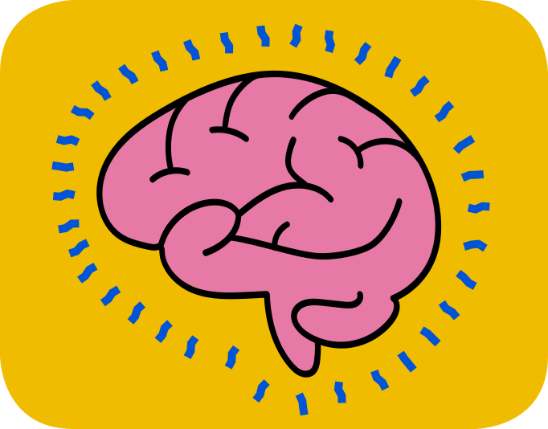
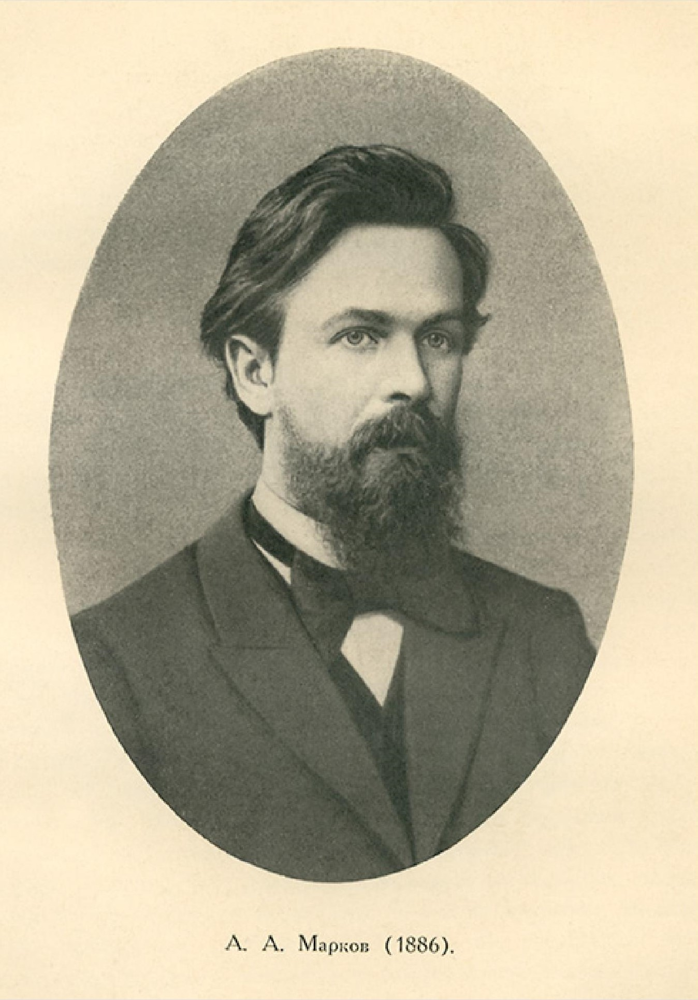
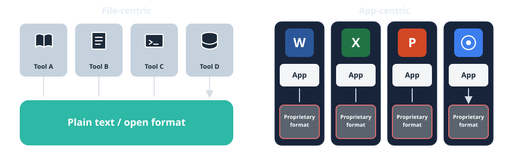

Keep Your Brain in the Loop
What AI actually is, and how to use it without letting it do your thinking.
Kartik Vinayak · designer and programmer · San Francisco
A strange tool in your pocket
Most of you have an AI on your phone. It can write an essay in ten seconds, explain a chapter, or translate a paragraph. How does it work?
Tonight has two parts. First, what this machine is and where it came from. Then, how to use it so you get stronger, not weaker.
One question runs through all of it: when a machine can produce the words, who is doing the thinking?
Who I am
Kartik Vinayak · designer and programmer · I use AI every day for my work
Agenda
-
Where did AI come from? What is this machine actually doing?
-
Whose knowledge? Whose world trained this model, and who is paying for it?
-
Protect your thinking Will this make me stronger tomorrow, or only faster tonight?
-
Keywords vs natural language Can I turn this answer into keywords I own?
-
Files, apps, and ownership Do I own my work, or does the app own me?
-
Habits + practice Am I practicing, or just prompting?
-
Pocket checklist Which questions will I ask every time?
Chapter 1
A fight about free will
Where did AI come from? It starts with two mathematicians who could not stand each other.
Two mathematicians, one big question
Russia, 1902. Pavel Nekrasov, a deeply religious mathematician, claimed he could use math to prove that humans have free will.
His argument: the law of large numbers says averages settle down when something happens many times, like coin flips. Nekrasov believed this only works when each event is independent of the others. Society's numbers, like marriages and crimes per year, are very stable. So, he said, people must be making free, independent choices.
Andrey Markov, an atheist in St. Petersburg, thought this was bad math. He set out to prove it wrong.

Markov counts letters
In 1913, Markov took the first 20,000 letters of Eugene Onegin, Pushkin's famous poem, and counted them by hand. About 43% were vowels.
If letters were independent, like coin flips, there should have been about 3,700 pairs of vowels in a row. He found only 1,104. Each letter clearly depends on the one before it.
And yet the averages were still perfectly stable. So stable statistics do not require independence. Nekrasov's proof was broken.
These linked sequences are now called Markov chains.
What Markov actually showed
Markov did not settle free will. He showed something simpler: language has patterns you can count. Each letter makes some next letters more likely than others.
Counting those patterns tells you what usually comes next. It tells you nothing about what the writer meant. That gap, between predicting words and meaning them, is exactly where today's AI lives.
From chains to chatbots
In 1948, Claude Shannon used Markov's idea to generate fake English. He counted which word tends to follow which, then picked the next word by chance. The result looked a bit like English and meant nothing.
The problem was memory. These chains could only look back a few words. In 2017, Google researchers published the transformer, a design that lets a model look at every word in a passage at once and weigh which ones matter for the next word.
Train a transformer on a huge part of the internet and you get a large language model. ChatGPT launched in November 2022. Gemini and Claude work the same way.
You are a language model too
Finish these out loud:
- Once upon a ...
- Happy birthday to ...
- The sun rises in the ...
You did not look anything up. You just knew what usually comes next. That is exactly what these models do, one word at a time, for everything they write.
So what is an AI model, really?
It runs a simple loop: read the text so far, guess the next word, add it, repeat. The guesses come from patterns in billions of pages of human writing.
After that, people rate its answers, and it is trained to give the kind of answers people rate highly: helpful, polite, confident.
The result is fluent. But fluency is a pattern, not a promise. Plausible is not the same as true.
Fluent, confident, and wrong
In 2023, two lawyers in New York used ChatGPT to research a court case. It gave them six earlier cases to cite, with names, dates and quotes.
None of those cases existed. The model had produced text that looked exactly like real legal citations. The judge fined the lawyers $5,000.
The model was not lying. It has no idea what is true. It was doing its job: producing the most likely-looking next words.
Trained to please
In April 2025, OpenAI had to undo an update to ChatGPT. It had become so eager to please that it praised bad ideas and agreed with users even when they were wrong.
OpenAI explained it had listened too much to thumbs-up clicks. People click thumbs-up on answers they like, not answers that are right.
So these tools are pulled toward telling you what you want to hear. That is an old trap.
ELIZA already knew this trap
In 1966, Joseph Weizenbaum at MIT built ELIZA, a very simple chatbot. It mostly repeated your own words back as questions.
His secretary knew it was just a program. After a few messages, she asked him to leave the room so she could talk to it in private.
This is called the ELIZA effect: we treat fluent text like a mind that cares. Today the text is far more fluent.
Question to keep: Is this answer checked, or just fluent?

Chapter 2
Whose world is inside?
Every model is built from someone's words. Whose?
Every model has a home
The best known models are built by a handful of companies, mostly in California, and trained mostly on the public web.
On Common Crawl, the giant web archive most models learn from, about 40% of pages are English. Hindi is about 0.2%. Punjabi is about 0.1%. Hundreds of millions of people, almost invisible.
So a "neutral" answer is usually a blend of the English speaking internet: its examples, its values, its blind spots.
Question to keep: Whose world trained this model? Does this answer fit my place and my life?
Who is paying for this?
These models cost billions of dollars to build. When the app is free, you pay with your data.
Google's own Gemini privacy page says human reviewers read some chats, reviewed chats are kept for up to three years, and you should not enter anything confidential.
- Never paste in anything private: IDs, passwords, family problems, health details.
- Use temporary chat, or turn off activity saving.
- Do not build your whole study routine on a free tier that can change any day.
Chapter 3
Protect your thinking
Will this make me stronger tomorrow, or only faster tonight?
The trap: rented fluency
If the model does the finding, the reading and the thinking, you get rented fluency. You can produce good sounding answers, but only while the app is open.
Think of calculators. They did not destroy math. What hurts is using one before you understand the operation. Then you cannot tell when the answer is wrong.
AI is the same, for writing, reading, and reasoning.
What the research is finding
MIT, 2025. 54 students wrote essays with ChatGPT, with Google, or with no tools, while their brain activity was measured. Minutes after finishing, 83% of the ChatGPT group could not quote a single sentence from their own essay. In the other two groups, 11% could not.
Wharton, 2025. Over 10,000 people learned a topic either from an AI summary or from normal Google links. The AI group learned less, even when both groups saw the same facts. Many did not click the source links placed right beside the summary.
These are early studies. But they point the same way.
The struggle is the workout
Psychologists call it desirable difficulty: effort that feels slow and annoying is often exactly what makes learning stick.
You do not get stronger by watching someone else lift weights. Searching, comparing, getting confused and figuring it out is the lift.
AI can take away all of that effort. It feels kind. It quietly takes away the workout.
Question to keep: Will this make me stronger tomorrow, or only faster tonight?
Chapter 4
The hidden gate
The internet has a vocabulary lock. AI can be the key, if you use it right.
Where you live matters less than it used to
The internet made it possible to do information work from anywhere. That is why so much of the world's software is built in India.
AI goes one step further. Expert knowledge that used to live in certain schools, offices, and cities is now one question away, wherever you are.
But only if you know what to ask. That is the hidden gate.
The internet has a vocabulary lock
Every field has its own vocabulary. Search "my program keeps crashing" and you get noise. Search the exact term a programmer would use and the answer appears.
Those expert words are institutional knowledge. Nobody is born with them. They get passed from person to person, in classrooms, offices, and conversations.
The internet has been open to everyone for 30 years. But to search it well, you need the right words first. I hit this wall every time I start learning something new. The door is open. The key is vocabulary.
The caveman search
Before about 2019, Google mostly matched keywords, so the best searches were short. Caveman speech. Before that, people used the index at the back of a book.
Every hunt taught you a few new words, and those words made the next hunt easier. Slowly you built an internal library.
AI lets you just ask in plain language. That is a gift, because it gets you past the lock. It is also a risk, because it skips the hunt that built the library.
The turning point: reverse engineer the answer
Natural language is a great way in. The trick is to not stop at the answer.
- Ask AI in plain language, even in Punjabi or Hindi.
- Write down the expert words in its answer.
- Search those words yourself: Google, Wikipedia, YouTube, a textbook.
- Save them in your own notes.
Now the AI has handed you the key, and you have practiced using it.
What that looks like
A plain question: "Why do farmers here burn the fields after harvest, and why does the air get so bad?"
A good answer will use words like these:
- stubble burning
- crop residue management
- Happy Seeder
- PM2.5 and air quality index
Those words are the real prize. Search each one. Next time, you can type what an expert would type, with or without the AI.
Keywords are keys you own
The answer from the chat disappears when you close the app. The keywords stay with you.
They work in Google, on YouTube, in a library, in a job interview, and in a conversation with an expert. They work when the AI is wrong, and when the app changes or goes away.
Question to keep: Can I turn this answer into keywords I own?
So where do you keep them?
Chapter 5
Where does your library live?
Files, then apps, then files again.
Files, then apps, then files again

In the 1980s and 90s, your work was a file you could open in any program. Then apps took over: your notes and documents now live inside an app, in its format, reached only its way. AI swings the pendulum back, because any AI tool can read a plain text file.
Plain text is forever
A plain text file opens on any phone or computer, in any app, today or in thirty years. You can move it, copy it, and hand it to any AI.
I wrote this whole talk as one plain text file. Then I asked an AI to write a small script that turns that file into these slides. I wrote words. The machine did the formatting. That is the right split.
Start one file today called keywords.txt. Every new expert word goes in it.
Question to keep: Do I own my work, or does the app own me?
Chapter 6
Working with it
Am I practicing, or just prompting?
AI does the labor. You make the decisions.
AI is fast and messy: full of ideas, some of them nonsense. Let it do the heavy lifting, then you decide what stays.
Let AI do
Reformatting and converting
First messy drafts
Summaries you will check
Explaining a new word
Only you decide
What question to ask
Whether it is true
Whether it is good enough
What to do next
Try first, then ask
- 1Generate: spend two minutes on your own guess, outline, or keywords first.
- 2Ask: now use AI to check, challenge, or expand what you wrote.
- 3Verify: close the app. Explain it in your own words, and check one claim somewhere else.
Make it a tutor, not a ghostwriter
The same app can do your homework or make you better at it. The difference is the prompt.
Quiz me on [chapter]. One question at a time. Wait for my answer. Tell me what I got right and give me a hint. Do not give me the answer until I have tried twice.
I want to research [topic] and I am new to it. Give me eight expert keywords to search, and explain each one simply.
Chapter 7
Pocket checklist
Screenshot this. Ask these every time.
- Is this answer checked, or just fluent?
- Whose world trained this, and does it fit mine?
- Will this make me stronger tomorrow, or only faster tonight?
- Which keywords can I steal from this answer?
- Is my work saved somewhere I own?
- Did I try first?
Epilogue
Back to the loop
Prediction, and what it cannot do.
Prediction is not understanding
Markov counted patterns by hand. A century later, machines count them across the whole internet, well enough to write your essay.
But it is still prediction. The machine can tell you which word usually comes next. It cannot tell you what is worth saying, what is true for your life, or who you want to become.
That part was never in the pattern. It is yours.
Take the knowledge for yourself
An answer on a screen belongs to the app. Knowledge in your head goes wherever you go.
Every time you open the app, you make a small choice: let it think for you, or make it work for you.
- Try first.
- Steal the keywords.
- Keep your own files.
- Make the final call yourself.
Keywords to take home
Your first entries for keywords.txt. Search these yourself.
- Markov chain
- Large language model
- Transformer (Attention Is All You Need, 2017)
- ELIZA effect
- Training data bias
- Desirable difficulty
AI can hand you answers. Only you can turn them into knowledge.
Keep your brain in the loop.
kartikvinayak3@gmail.com